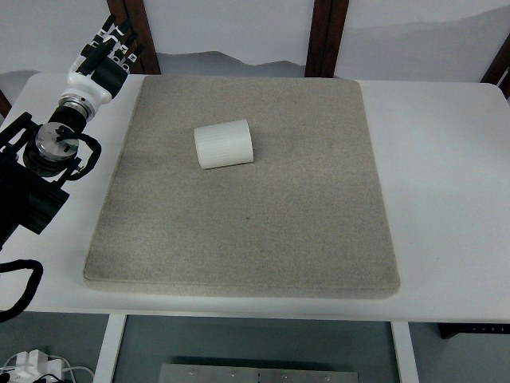

RoboMIND · tienkung_gello_1rgb__upright_white_cup/1211_141210
Upright white cup

Annotation
From the dedicated visual review of this video (humanoid_action_v1). Plain text · JSON
Observed outcome
- Status
visually_completed
- Description
The white cup, lying on its side at the start, is gripped near its rim by the dexterous hand (hand scalar closes about frames 205-260), lifted from about frame 286, tilted with its open mouth turning upward and carried to the upper left of the mat, then lowered and set upright by about frame 500 as the hand opens (about 458-500). The cup stands upright with its mouth up, close to its starting location, and stays upright and still after the thumb leaves the rim (about 552) and the arm withdraws (to frame 699).
Hand roles
- Active visible arm
The single visible arm reaches over the cup, closes the dexterous hand around the cup near its rim with the thumb outside, lifts and tilts it, carries it to the upper left, lowers and sets it upright, opens the hand to release, and withdraws.
- Other arm
Not visible in the overhead view; telemetry for the second 8-column block is nearly constant, so it does not act.
Coordination
Single-arm action; no hand-to-hand transfer, second-hand support or human interaction. One continuous grasp from about frame 260 to about 500 with no regrasp seen; the cup is reoriented as a whole by wrist motion (the open mouth turns from facing right to facing up), not slid.
Robot-side evidence
- Visible description
Only one arm is visible: a white-and-black humanoid arm with a white-and-black multi-finger dexterous hand entering the overhead image from the left edge, with the dark robot body mass at the lower left; the mat extends to the right. The separated lowest digit (black, probably thumb) points toward the table and, during the grasp, sits on the outer wall of the cup.
- Source annotation
original/task_prompt.txt: 'Upright white cup'; no side stated.
- Telemetry evidence
In puppet/joint_position only the first 8 columns vary (columns 0-6 change, column 7 is the hand scalar, about 1.0 open to about 0.74 closed); the last 8 columns are nearly constant. The moving block therefore corresponds to the visible arm. Which block is left or right is not documented in the source.
- Inferred side
Probably the robot's left arm, because the arm base is at the left edge of a forward-looking head view and the first telemetry block conventionally maps to the left arm. This is inference, not established, so the usable prompt says 'arm entering from the left edge of the image' instead of naming a robot side.
- Visual certainty
Robot-relative left/right not reliably determined from the overhead view (the torso and facing direction are not visible).
Chronology
| Frames | Observation |
|---|---|
| 0–46 | Arm held still at the left edge with the hand raised and fingers pointing up; one white cup lies on its side (long axis roughly left-right) on the grey-blue mat. Telemetry flat. |
| 48–94 | Hand lowers and rotates toward palm-down and the forearm sweeps toward the cup; fingers open and extended. |
| 96–124 | Hand extends over the cup; the lowest separated digit (probably the thumb) points down at the cup and touches its top by about frames 112-124. |
| 126–200 | Arm extends fully forward; the hand rests over the cup with the fingers draped across and over its upper side, cup still lying on its side at its original spot. Telemetry hand scalar (column 7) still about 1.0 (open). |
| 202–262 | Fingers curl around the cup near its rim, the black thumb on the outer wall; the hand scalar falls from about 1.0 to about 0.8 (frames about 205-260), consistent with closing. Cup still on the mat. |
| 264–284 | Hand holds the cup; the cup begins to tilt as the wrist rotates, near end rising off the mat. |
| 286–310 | Cup lifted and tilted by the hand; its open end becomes visible facing up and to the right (clearly at frames 296-304); frame 304 is a native-resolution check. |
| 312–334 | Cup carried up and toward the upper left near the top image edge, tilted with the open mouth facing up-right; the thumb is on the outer wall (native frames 316, 340). |
| 336–452 | Cup held in the air at the upper left, partly near the top edge, gradually rotated from tilted toward upright while the hand moves slowly down; grasp unchanged, no regrasp seen (native frame 400). |
| 454–498 | Cup lowered toward the mat and brought nearly upright; the hand scalar rises from about 0.75 to about 1.0 (frames about 458-500), consistent with the fingers opening; at frame 496 the cup is nearly upright with fingers still against its rim. |
| 500–512 | Cup stands upright on the mat with its mouth facing up and slightly toward the camera; the fingers are open and released (native frame 504). |
| 514–550 | Hand remains above the cup with fingers spread; the thumb tip hovers over or just inside the rim without moving the cup (native frames 520, 532, 544). Cup remains upright and stationary. |
| 552–600 | Hand lifts away upward and to the left, fingers open (native frames 552, 600). Cup stays upright. |
| 602–699 | Arm raised and retracted at the upper-left edge, hand largely out of view or at the image edge; cup stands upright and unmoved at about its original location to the last frame (698 viewed, 699 not viewed). |
Clip selection
The episode is one continuous single task (pick up the cup lying on its side, reorient it, set it upright, release and withdraw); there are no independent subtasks, so the complete original clip is retained and no shortened branch or separate full-sequence prompt is written.
Differences from the publisher annotation
- None found: the visible action matches 'Upright white cup'. The source does not say the cup starts lying on its side or which arm acts.
Uncertainties
- Robot-relative left/right arm is not established from the overhead view; probable left arm is inferred from geometry and telemetry-block convention and is not asserted in the prompt.
- Exact finger placement on the cup (which fingers are on the inner versus outer wall of the rim, and whether any fingertip enters the mouth during the grasp) cannot be resolved at 640x480; the prompt says 'near its rim' with the thumb on the outer wall.
- The cup's open end is not visible in the initial frame (it lies on its side); its mouth faces right and up by frames 296-304.
- Which digit is the thumb is inferred from the separated black lowest digit and its position on the outer wall during the grasp.
- The odd-numbered frames were not viewed individually; the review samples every second frame plus native-resolution checks. Frame 699 was not viewed.
- Whether the thumb tip enters the cup mouth around frames 514-550 is unclear; the cup does not move.
- FPS is not recorded; frame indices are authoritative, not time.
Complete review record action_review.json
{
"prompt_protocol": "humanoid_action_v1",
"prompt_protocol_note": "humanoid_action_v1 is applied by analogy to a non-Humanoid-Everyday/GR1 humanoid (Tien Kung with dexterous hands, single overhead RGB stream); not an original dataset of that protocol.",
"prompt_provenance": "visually_authored_from_video_and_initial_frame",
"dataset": "x-humanoid-robomind/RoboMIND",
"task": "upright_white_cup",
"episode_id": "1211_141210",
"embodiment": "tienkung_gello_1rgb",
"source_video": "../../original/data/trajectory.hdf5",
"generation_camera": "camera_top",
"source_frame_count": 700,
"source_resolution": [
640,
480
],
"source_fps": null,
"source_fps_note": "FPS is not recorded in the source HDF5; 30 FPS is only a nominal playback rate, so no real-time durations are claimed.",
"selected_source_frame_start": 0,
"selected_source_frame_end_exclusive": 700,
"selected_frame_count": 700,
"selection_reason": "The episode is one continuous single task (pick up the cup lying on its side, reorient it, set it upright, release and withdraw); there are no independent subtasks, so the complete original clip is retained and no shortened branch or separate full-sequence prompt is written.",
"usable_prompt": "The robot's arm entering from the left edge of the image reaches over the white cup lying on its side, closes its dexterous hand around the cup near its rim with the black thumb on the outer wall, and lifts it. It tilts the cup so the open mouth turns upward, carries it up and to the upper left, then lowers it and sets it upright on the mat. The fingers open to release the cup and the hand withdraws up and to the left, leaving the cup standing upright. Keep the camera fixed; preserve robot geometry, physically valid joint motion, and normal gripper opening and closing.",
"full_sequence_prompt": null,
"selected_action_outcome": {
"status": "visually_completed",
"description": "The white cup, lying on its side at the start, is gripped near its rim by the dexterous hand (hand scalar closes about frames 205-260), lifted from about frame 286, tilted with its open mouth turning upward and carried to the upper left of the mat, then lowered and set upright by about frame 500 as the hand opens (about 458-500). The cup stands upright with its mouth up, close to its starting location, and stays upright and still after the thumb leaves the rim (about 552) and the arm withdraws (to frame 699)."
},
"source_overall_outcome": {
"status": "visually_completed",
"source_quality_label": null,
"description": "Same as the selected action: the cup ends upright on the mat. The source instruction is 'Upright white cup'. No success flag is in the source."
},
"anatomical_side_evidence": {
"visible_description": "Only one arm is visible: a white-and-black humanoid arm with a white-and-black multi-finger dexterous hand entering the overhead image from the left edge, with the dark robot body mass at the lower left; the mat extends to the right. The separated lowest digit (black, probably thumb) points toward the table and, during the grasp, sits on the outer wall of the cup.",
"source_annotation": "original/task_prompt.txt: 'Upright white cup'; no side stated.",
"telemetry_evidence": "In puppet/joint_position only the first 8 columns vary (columns 0-6 change, column 7 is the hand scalar, about 1.0 open to about 0.74 closed); the last 8 columns are nearly constant. The moving block therefore corresponds to the visible arm. Which block is left or right is not documented in the source.",
"inferred_side": "Probably the robot's left arm, because the arm base is at the left edge of a forward-looking head view and the first telemetry block conventionally maps to the left arm. This is inference, not established, so the usable prompt says 'arm entering from the left edge of the image' instead of naming a robot side.",
"visual_certainty": "Robot-relative left/right not reliably determined from the overhead view (the torso and facing direction are not visible)."
},
"arm_roles": {
"active_visible_arm": "The single visible arm reaches over the cup, closes the dexterous hand around the cup near its rim with the thumb outside, lifts and tilts it, carries it to the upper left, lowers and sets it upright, opens the hand to release, and withdraws.",
"other_arm": "Not visible in the overhead view; telemetry for the second 8-column block is nearly constant, so it does not act."
},
"coordination": "Single-arm action; no hand-to-hand transfer, second-hand support or human interaction. One continuous grasp from about frame 260 to about 500 with no regrasp seen; the cup is reoriented as a whole by wrist motion (the open mouth turns from facing right to facing up), not slid.",
"chronology": [
{
"source_frames_inclusive": [
0,
46
],
"observation": "Arm held still at the left edge with the hand raised and fingers pointing up; one white cup lies on its side (long axis roughly left-right) on the grey-blue mat. Telemetry flat."
},
{
"source_frames_inclusive": [
48,
94
],
"observation": "Hand lowers and rotates toward palm-down and the forearm sweeps toward the cup; fingers open and extended."
},
{
"source_frames_inclusive": [
96,
124
],
"observation": "Hand extends over the cup; the lowest separated digit (probably the thumb) points down at the cup and touches its top by about frames 112-124."
},
{
"source_frames_inclusive": [
126,
200
],
"observation": "Arm extends fully forward; the hand rests over the cup with the fingers draped across and over its upper side, cup still lying on its side at its original spot. Telemetry hand scalar (column 7) still about 1.0 (open)."
},
{
"source_frames_inclusive": [
202,
262
],
"observation": "Fingers curl around the cup near its rim, the black thumb on the outer wall; the hand scalar falls from about 1.0 to about 0.8 (frames about 205-260), consistent with closing. Cup still on the mat."
},
{
"source_frames_inclusive": [
264,
284
],
"observation": "Hand holds the cup; the cup begins to tilt as the wrist rotates, near end rising off the mat."
},
{
"source_frames_inclusive": [
286,
310
],
"observation": "Cup lifted and tilted by the hand; its open end becomes visible facing up and to the right (clearly at frames 296-304); frame 304 is a native-resolution check."
},
{
"source_frames_inclusive": [
312,
334
],
"observation": "Cup carried up and toward the upper left near the top image edge, tilted with the open mouth facing up-right; the thumb is on the outer wall (native frames 316, 340)."
},
{
"source_frames_inclusive": [
336,
452
],
"observation": "Cup held in the air at the upper left, partly near the top edge, gradually rotated from tilted toward upright while the hand moves slowly down; grasp unchanged, no regrasp seen (native frame 400)."
},
{
"source_frames_inclusive": [
454,
498
],
"observation": "Cup lowered toward the mat and brought nearly upright; the hand scalar rises from about 0.75 to about 1.0 (frames about 458-500), consistent with the fingers opening; at frame 496 the cup is nearly upright with fingers still against its rim."
},
{
"source_frames_inclusive": [
500,
512
],
"observation": "Cup stands upright on the mat with its mouth facing up and slightly toward the camera; the fingers are open and released (native frame 504)."
},
{
"source_frames_inclusive": [
514,
550
],
"observation": "Hand remains above the cup with fingers spread; the thumb tip hovers over or just inside the rim without moving the cup (native frames 520, 532, 544). Cup remains upright and stationary."
},
{
"source_frames_inclusive": [
552,
600
],
"observation": "Hand lifts away upward and to the left, fingers open (native frames 552, 600). Cup stays upright."
},
{
"source_frames_inclusive": [
602,
699
],
"observation": "Arm raised and retracted at the upper-left edge, hand largely out of view or at the image edge; cup stands upright and unmoved at about its original location to the last frame (698 viewed, 699 not viewed)."
}
],
"uncertainties": [
"Robot-relative left/right arm is not established from the overhead view; probable left arm is inferred from geometry and telemetry-block convention and is not asserted in the prompt.",
"Exact finger placement on the cup (which fingers are on the inner versus outer wall of the rim, and whether any fingertip enters the mouth during the grasp) cannot be resolved at 640x480; the prompt says 'near its rim' with the thumb on the outer wall.",
"The cup's open end is not visible in the initial frame (it lies on its side); its mouth faces right and up by frames 296-304.",
"Which digit is the thumb is inferred from the separated black lowest digit and its position on the outer wall during the grasp.",
"The odd-numbered frames were not viewed individually; the review samples every second frame plus native-resolution checks. Frame 699 was not viewed.",
"Whether the thumb tip enters the cup mouth around frames 514-550 is unclear; the cup does not move.",
"FPS is not recorded; frame indices are authoritative, not time."
],
"source_annotation_discrepancies": [
"None found: the visible action matches 'Upright white cup'. The source does not say the cup starts lying on its side or which arm acts."
],
"inspection_coverage": {
"entire_sequence_reviewed": true,
"sampled_decoded_frame_indices": [
0,
2,
4,
6,
8,
10,
12,
14,
16,
18,
20,
22,
24,
26,
28,
30,
32,
34,
36,
38,
40,
42,
44,
46,
48,
50,
52,
54,
56,
58,
60,
62,
64,
66,
68,
70,
72,
74,
76,
78,
80,
82,
84,
86,
88,
90,
92,
94,
96,
98,
100,
102,
104,
106,
108,
110,
112,
114,
116,
118,
120,
122,
124,
126,
128,
130,
132,
134,
136,
138,
140,
142,
144,
146,
148,
150,
152,
154,
156,
158,
160,
162,
164,
166,
168,
170,
172,
174,
176,
178,
180,
182,
184,
186,
188,
190,
192,
194,
196,
198,
200,
202,
204,
206,
208,
210,
212,
214,
216,
218,
220,
222,
224,
226,
228,
230,
232,
234,
236,
238,
240,
242,
244,
246,
248,
250,
252,
254,
256,
258,
260,
262,
264,
266,
268,
270,
272,
274,
276,
278,
280,
282,
284,
286,
288,
290,
292,
294,
296,
298,
300,
302,
304,
306,
308,
310,
312,
314,
316,
318,
320,
322,
324,
326,
328,
330,
332,
334,
336,
338,
340,
342,
344,
346,
348,
350,
352,
354,
356,
358,
360,
362,
364,
366,
368,
370,
372,
374,
376,
378,
380,
382,
384,
386,
388,
390,
392,
394,
396,
398,
400,
402,
404,
406,
408,
410,
412,
414,
416,
418,
420,
422,
424,
426,
428,
430,
432,
434,
436,
438,
440,
442,
444,
446,
448,
450,
452,
454,
456,
458,
460,
462,
464,
466,
468,
470,
472,
474,
476,
478,
480,
482,
484,
486,
488,
490,
492,
494,
496,
498,
500,
502,
504,
506,
508,
510,
512,
514,
516,
518,
520,
522,
524,
526,
528,
530,
532,
534,
536,
538,
540,
542,
544,
546,
548,
550,
552,
554,
556,
558,
560,
562,
564,
566,
568,
570,
572,
574,
576,
578,
580,
582,
584,
586,
588,
590,
592,
594,
596,
598,
600,
602,
604,
606,
608,
610,
612,
614,
616,
618,
620,
622,
624,
626,
628,
630,
632,
634,
636,
638,
640,
642,
644,
646,
648,
650,
652,
654,
656,
658,
660,
662,
664,
666,
668,
670,
672,
674,
676,
678,
680,
682,
684,
686,
688,
690,
692,
694,
696,
698
],
"sampling_method": "Every second decoded frame of camera_top (frames 0-698) in temporary 4x3 contact sheets (12 per sheet) covering the complete 700-frame source, plus native-resolution 640x480 frame checks at transitions.",
"native_resolution_frame_indices": [
100,
112,
124,
150,
200,
250,
280,
296,
304,
316,
340,
400,
480,
496,
504,
520,
532,
544,
552,
600
],
"conditioning_png_inspected_after_sequence": true,
"conditioning_png": "../first_frame.png",
"temporary_evidence_location": "/tmp/rv_review/robomind_1211_141210 (not a dataset artifact; removed)",
"ancillary_camera_videos_used": false,
"telemetry_used": "puppet/joint_position column variance, and column 7 (hand scalar) sampled every 10 frames, as supporting evidence only."
},
"evidence_frame_indices": [
0,
112,
124,
200,
250,
296,
304,
316,
340,
400,
496,
504,
520,
544,
552,
600,
698
],
"review_completed_at": "2026-10-15T20:06:51Z",
"dedicated_review_agent": "review_robomind_1211_141210",
"channel_order_note": "Channel-order correction (2026-10-15): RoboMIND stores Tien Kung JPEGs with red and blue swapped relative to a standard decoder; this review was made on uncorrected frames, so colour terms in its observations are swapped (teal/cyan reads as yellow or yellow-green, blue as orange/brown, brown/pink as blue). Actions, timing and outcomes are unaffected. All decoded derivatives are now corrected.",
"generation_reference_validation": {
"source_frame_start": 0,
"source_frame_end_exclusive": 700,
"frame_count": 700,
"lossless_source_frame_correspondence_passed": true,
"original_source_hdf5_retained_unchanged": true
}
}